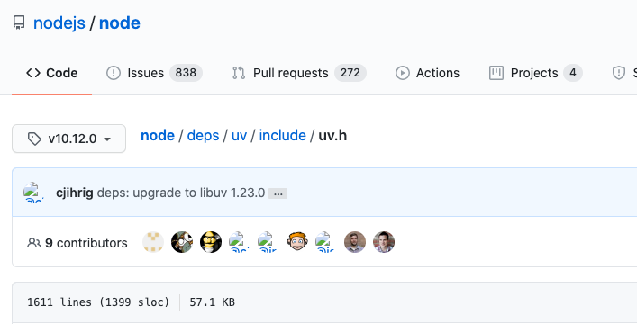

运行命令的时候，经常会报错，怎么处理这些错误呢？
example1:
1 | ➜ hah git:(master) ✗ hexo server |
nodejs 错误查询指路（官方文档）：
中文：http://nodejs.cn/api/errors.html#errors_error_code
英文：https://nodejs.org/api/errors.html#nodejs-error-codes
nodejs 错误查询指路（代码指路）：
选择所使用的版本的tag
node/deps/uv/include/uv.h

node/deps/uv/include/errno.h
发现是系统错误：
manual指南：https://man7.org/linux/man-pages/man3/errno.3.html
查了下文档
为什么会抛这个系统错误呢，初步估计可能和node版本相关，便查了下hexo的文档
Node.js (Node.js 版本需不低于 10.13，建议使用 Node.js 12.0 及以上版本) ➜ blog git:(master) ✗ node --version v10.10.0
所以得升级node版本
- hexo trouble shooting - https://hexo.io/docs/troubleshooting.html
一些基本操作
node退出：ctrl+C(两次) ctrl+D(两次) .exit
项目配置
https://nodejs.org/api/report.html
可以导出文件
增加 –json >stats.json